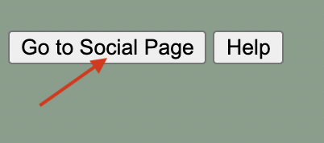
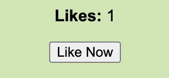

In the top left corner of the screen, you'll see the Social Page button. Clicking this will redirect you to the page where you can add friends and accept friend requests, and see mutually liked movies between you and your friends.
In the top right corner of the screen, you'll see a Create a Post button. By clicking this, you will be redirected to a page where you are able to create a movie post of your own. After posting, come back to the home page to see your post live!
Likeing a post is a big feature of this site. As a user, you are able to like pre-exiting posts, or new ones. After pressing the like button, you will not be able to see the number of likes immediately.
After refreshing the page, the likes count will be updated. This feature also allows you to see the movies that both you and your friends like in the socials page!
